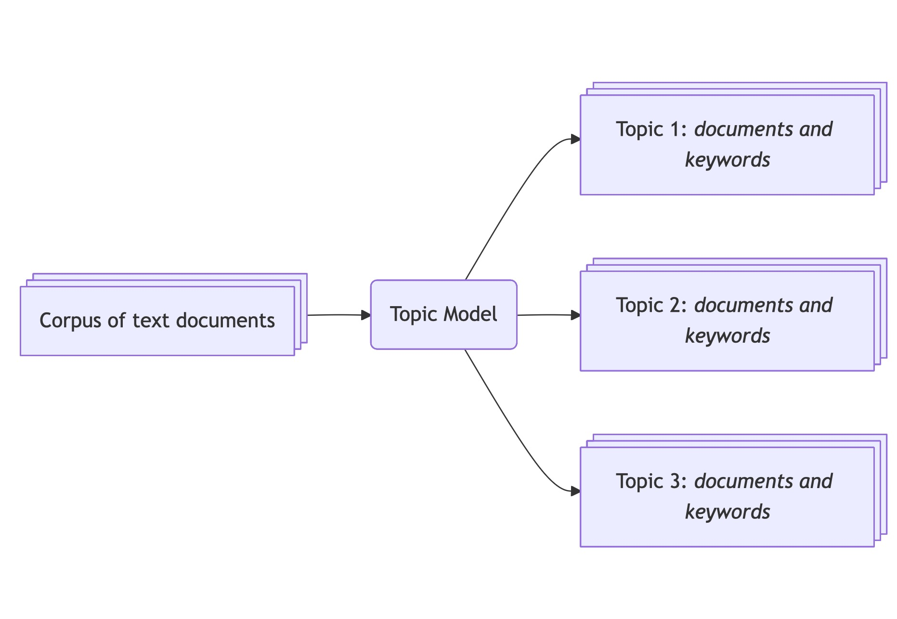
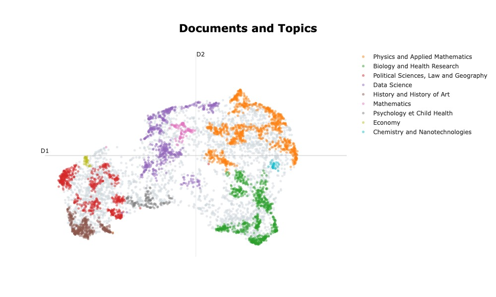

Explorer et classifier les thèmes d’un corpus de textes avec BERTopic et Python
Intro
Objectifs de la leçon
- Introduction aux méthodes de topic modelling: Quelles méthodes existent ? Pour quelles tâches ? Dans quels contextes ?
- Introduire les concepts structurants de la librairie, et illustrer son utilisation
- Illustrer les commandes et visualisations principales
- Sensibiliser aux bonnes pratiques pour faciliter la reproductibilité et l’usage des modèles de langue.
Prérequis
Ce tutoriel requiert d’avoir une certaine aisance avec Python. Par exemple, nous n’expliquons pas :
- Comment initialiser son environnement et installer des paquets
- Les syntaxes de base de Python (fonctions, variables, conditions, loupes “for”) ni les manipulations Pandas de base comme l’ouverture de fichier ou les traitements usuels de création, suppression de colonnes ou lignes.
Ce tutoriel aborde des notions de NLP de base (modèles de plongement, similarité sémantique) et nous faisons appel à des notions de Machine Learning (clustering, réduction de dimensionalité). Ce tutoriel présente comment les concepts s’articulent entre eux mais nous ne redéfinissons pas individuellement chaque terme. Nous renvoyons vers de nombreuses sources qui font ce travail.
Matériel disponible, et environnement virtuel
Dans le cadre de ce tutoriel, nous mettons a disposition plusieurs fichiers sur la plateforme Zenodo. Vous y trouverez:
- Le jeux de données complet nettoyé1 (700 Mo): La procédure de nettoyage des données est renseignée ici (written in English).
- Un extrait stratifié du jeu de données[^info-stratification] (30 Mo): Pour chaque année, nous avons tiré 500 lignes. En tout, le jeu de données contient 6500 lignes.
- Un ensemble de jeux de plongements : En tout nous proposons 9 jeux de plongements pour 3 modèles différents (Alibaba-NLP/gte-multilingual-base, sentence-transformers/all-MiniLM-L6-v2, Qwen/Qwen3-0.6B), deux langues (anglais, français) et deux techniques de génération (pipeline Huggingface ou SBERT). Ces jeux de données permettent d’explorer les variations de résultats selon les modifications décrites.
Ces données ont été rendues disponibles dans le cadre de la publication de ce tutoriel The General Inquirer in the time of LLMs: a BERTopic tutorial en anglais, dont le présent tutoriel est une traduction.
Pour préparer votre espace Python, nous conseillons les versions suivantes:
bertopic==0.17.3
datasets==4.3.0
hdbscan==0.8.40
numpy==2.3.5
pandas==2.3.3
plotly==6.3.1
scikit_learn==1.8.0
stopwordsiso==0.6.1
transformers==4.52.4
umap_learn==0.5.7Comprendre chaque étape de la pipeline
La pipeline de BERTopic est relativement simple. En entrée, on renseigne un certain nombre de documents et en sortie, on obtient un certains nombre de groupes (les topics) définis par des documents constitutifs du groupe, ainsi que des mots clefs spécifiques.

Voici un exemple de résultat sous forme de tableau récapitulatif et de visualisation des topics, leur taille et position les uns par rapport aux autres :
| Topic | Count | Name | Representation |
|---|---|---|---|
| 0 | 1601 | Physics and Applied Mathematics | model study material property method phase surface field process thesis |
| 1 | 1275 | Biology and Health Research | cell gene protein study expression role species response involve mouse |
| 2 | 1156 | Political Sciences, Law and Geography | law legal study french language international teacher analysis public social |
| 3 | 1030 | Data Science | propose datum model method base approach network thesis application algorithm |
| 4 | 631 | History and History of Art | literary century study writing art time author history narrative period |
| 5 | 202 | Mathematics | graph prove study space class thesis chapter theorem random theory |
| 6 | 328 | Psychology et Child Health | study child patient infant adolescent disorder preterm social age intervention |
| 7 | 105 | Economy | monetary bank policy economic chapter financial country banking credit growth |
| 8 | 172 | Chemistry and Nanotechnologies | emulsion hydrogel microgels casein surface collagen property droplet quercetin gel |

Attardons nous quelques temps pour comprendre comment sont produits les topics. La pipeline de BERTopic peut être décrite en 3 grandes étapes:
- Transformer les documents (textes) en vecteurs mathématiques. Il s’agit de générer des plongements (embeddings) grâce à un modèle de langage.
- Regrouper les plongements en groupes, dans l’espoir que ces groupes soient représentatifs de sujets latents dans notre corpus.
- Pour chaque groupe, identifier les mots clefs qui représentent le mieux la spécificité de chaque topic.
Revenons plus précisément sur chaque étape et identifions les concepts clefs sur lesquelles se basent BERTopic:
1. Transformer les documents en vecteurs mathématiques
Pour générer des plongements, ces vecteurs à plusieurs centaines de dimensions, nous utilisons des modèles de plongements. Ces modèles sont entraînés à reconnaître des motifs dans les textes observés et à distinguer des textes qui sont sémantiquements proches, de textes qui ne le sont pas. La force de ces modèles est d’encapsuler énormément d’informations présentes dans le texte dans un vecteur (représentation dense)

Dans le cas du Topic modelling, nous utilisons ces modèles dans l’espoir que les plongements générés encapsule une forme de motif: celui du thème abordé. Un texte abordant les effets de crises économiques sur la population Française devrait être sémantiquement plus proche d’un texte abordant les stratégies de financement de la transition écologique que d’un texte étudiant un accélérateur de particule.
Cependant, du fait du fléau de la dimension (curse of dimensionality), il est très difficile et couteux de regrouper des objets dans un espace à 500 dimensions. Ainsi, la procédure inclus une étape de réduction de dimensionalité, qui projette les objets dans un espace de 2 à 10 dimensions en général. Pour ce faire, on utilise l’algorithme UMAP pour sa capacité à conserver les structures locales et globales. Ainsi, malgré la réduction de dimensions, on conserve la structure générale de l’espace de plongement (deux documents radicalement différents resteront très éloignés) tout en conservant certains détails locaux.
2. Regrouper les documents
Pour cette tâche on utilise un algorithme de clustering. Cet algorithme a pour but de trouver un juste milieux pour obtenir des groupes denses
Pour cette tâche on utilise l’algorithme HDBSCAN car il permet de repérer des groupes de forme, taille et densité différentes avec la possibilité de classifier certains documents comme “bruit” pour se concentrer sur des ensembles significatifs.
3. Identifier les mots clefs qui représentent le mieux la spécificité de chaque topic.
Une fois que les groupes sont constitués, il nous reste à identifier les mots clefs qui représentent au mieux la spécificité de chaque topic. Pour ce faire, on utilise des techniques basées sur le comptage des mots en utilisant l’objet CountVectorizer de scikit-learn. On obtient alors une matrice terme x document auquel on applique une transformation proche de TF-IDF, appelée c-TF-IDF. Cette transformation a pour but de sélectionner les mots qui apparaissent le plus au sein du groupe, et n’apparaissent pas dans les autres.
En résumé
En résumé, on a les trois étapes suivantes:
- Génération de plongements qui encapsulent la sémantique des textes avec SBERT, puis réduction du nombre de dimensions avec UMAP.
- Création de groupes de textes sémantiquement proches avec HDBSCAN. Chaque groupe trouvé représente potentiellement un théme latent dans le corpus.
- Identification de mots représentant au mieux un thème à partir d’une matrice
terme x documentet une transformation c-TF-IDF.
Ces étapes sont représentées sur le schéma mis en avant dans la documentation:
Nous ne couvrons pas l’étape optionnelle n°7. Cette étape propose d’utiliser une IA générative pour décrire les thèmes trouvés.
Use case
Introduction au jeu de données
Nous illustrons notre tutoriel en utilisant le registre des thèses mis à disposition par l’État français sur le site data.gouv.fr et qui répertorie l’ensemble des thèses défendues en France depuis 1985. Nous cherchons donc à explorer ce jeu de données afin de retrouver les grandes disciplines explorées par les doctorant.e.s en France à partir de leurs résumés. Ce registre a été plusieurs fois convoqué par la recherche pour étudier XXX. Il a l’avantage d’être relativement propre, avec peu de résumés manquants et des métadonnées qui nous seront utiles pour vérifier les résultats du topic model.
Ce jeu de données a été nettoyés par nos soins2, le nouveau jeu de données peut être téléchargé sur le dépot Zenodo. Nous avons tiré aléatoirement 6500 lignes avec une stratification par année. Nous avons choisi de nous concentrer sur les années 2010-2022 pour des raisons de qualité des données.
Une étape majeur pour le topic modelling est le prétraitement des textes. Nous listons quelques pré-traitements :
- Qualité des textes: Il est important de connaître son jeu de données en le parcourant rapidement. Notamment, il peut contenir des artefacts qui peuvent bruiter les plongements (balises HTML, défauts d’encodage (i.e. accents mal repérés) …). La définition du “bruit” dépend de votre question de recherche, par exemple vous pourriez décider de garder ou pas les emojis. Enfin, les modèles de plongements ne nécessitent pas de retirer les “stop words” comme ça pouvait être le cas avec d’autres méthodes; Nous souhaitons conserver les stop words ainsi que la ponctuation.
- Éviter les doublons: Si votre jeu de données comporte de trop nombreux doublons, un document présent plusieurs fois peut devenir un thème à lui tout seul.
- Homogénéité du corpus: Le topic modelling utilise les saillance les plus fortes pour distinguer les thèmes. Ainsi, des documents de plusieurs sources peuvent générer des thèmes différents si leurs formes divergent fortement (ton, longueur, densité d’information, etc…). Dépendemment de votre question de recherche, vous pouvez vouloir conserver ces différences, ou bien les exclure.
- Language des documents: Dans la même veine que l’homogénéité discutée avant, la langue du document peut être une différente trop saillante. Une alternative est de traduire tous les textes dans une seule langue en amont.
- Longueur des documents: Les modèles de plongement présentent une limite de taille de texte (aussi appelée la limite de contexte). Il est donc nécessaire d’accorder le choix du modèle de plongement avec notre corpus.
Créer son premier topic model
Pour commencer, chargons notre jeu de données:
import pandas as pd
df = pd.read_csv("./data/theses-soutenues-curated-stratified.csv")Le jeu de données présente plusieurs colonnes d’intérêt:
CI: un index.oai_set_specs: un code de discipline, par exemple,ddc:300représenteSciences sociales, sociologie et anthropologie.resumes.enetresumes.fr: les résumés des thèses en anglais et français
D’autres colonnes existent (titre de la thèse, sujet proposé par l’auteur.ice); elles nous aideront à l’évaluation du modèle.
Il nous suffit alors de choisir un modèle de plongement et créer une instance de BERTopic de la manière suivante:
from bertopic import BERTopic
topic_model = BERTopic(
language = "french",
embedding_model = "Alibaba-NLP/gte-multilingual-base"
)Puis de “fit” le modèle sur nos données :
topic_model.fit(documents = df["resumes.fr"])Nota: la syntaxe .fit, transform et fit_transform reprend la syntaxe définie par Scikit-learn, l’une des premières librairies de Machine Learning et l’une des plus complète! La méthode .fit adapte un modèle à nos données, tandis que .transform permet d’utiliser le modèle pour faire des prédictions.
Nous pouvons extraire les thèmes de la manière suivante:
topics, probabilities = topic_model.transform(documents=df["resumes.fr"])On obtient alors une liste de thèmes, assignant chaque thèse à un groupe, ainsi que des probabilités, un score traduisant la distance d’un document au groupe assigné.
Nous pouvons extraire les informations des groupes comme ceci:
topic_model.get_topic_info()| Topic | Count | Representation | |
|---|---|---|---|
| 0 | -1 | 2870 | [‘thèse’, ‘étude’, ‘travail’, ‘analyse’, ‘résultats’, ‘modèle’, ‘également’, ‘développement’, ‘système’, ‘partie’] |
| 1 | 0 | 180 | [‘comportement’, ‘essais’, ‘matériaux’, ‘rupture’, ‘matériau’, ‘mécanique’, ‘mécaniques’, ‘déformation’, ‘fatigue’, ‘numérique’] |
| 2 | 1 | 156 | [‘écoulement’, ‘fluide’, ‘écoulements’, ‘méthode’, ‘numériques’, ‘numérique’, ‘modèle’, ‘flamme’, ‘acoustique’, ‘simulation’] |
| 3 | 2 | 153 | [‘robot’, ‘images’, ‘objets’, ‘données’, ‘détection’, ‘méthodes’, ‘3d’, ‘proposons’, ‘robots’, ‘image’] |
| 4 | 3 | 120 | [‘ville’, ‘acteurs’, ‘politiques’, ‘urbaine’, ‘urbain’, ‘aménagement’, ‘agricoles’, ‘projets’, ‘développement’, ‘recherche’] |
| … | … | … | … |
| 102 | 101 | 11 | [‘gamma’, ‘trous’, ‘noirs’, ‘sursauts’, ‘lisa’, ‘primordiaux’, ‘eclairs’, ‘planck’, ‘univers’, ‘cmb’] |
| 103 | 102 | 11 | [‘bâtiment’, ‘air’, ‘ventilation’, ‘bâtiments’, ‘chaleur’, ‘thermique’, ‘mur’, ‘confort’, ‘rafraîchissement’, ‘paroi’] |
| 104 | 103 | 11 | [‘espèces’, ‘anabaena’, ‘diversification’, ‘re’, ‘acanthomorphes’, ‘caractères’, ‘phylogénie’, ‘cardiodactylus’, ‘aee’, ‘myrte’] |
| 105 | 104 | 10 | [‘charges’, ‘électrique’, ‘matériaux’, ‘thermoélectriques’, ‘champ’, ‘diélectrique’, ‘permittivité’, ‘pedot’, ‘diélectriques’, ‘polymères’] |
| 106 | 105 | 10 | [‘organisationnelle’, ‘dirigeant’, ‘entraide’, ‘réductions’, ‘effectifs’, ‘acceptation’, ‘comportement’, ‘socialisation’, ‘middle’, ‘performance’] |
| 107 | 106 | 10 | [‘croissance’, ‘cultures’, ‘production’, ‘microalgues’, ‘lignines’, ‘électrons’, ‘butyrate’, ‘mp’, ‘hp’, ‘hydrocarbures’] |
La colonne représentation renseigne les mots clefs identifiés pour chaque thème. On observe que les mots clefs du groupe bruit (groupe n°-1) ne donnent aucune information. Pour les autres sujets, on retrouve une suite de mots cohérents, par exemple:
- ‘ville’, ‘acteurs’, ‘politiques’, ‘urbaine’ : ce groupe pourrait être représentatif d’un thème lié au à l’urbanisme.
- ‘gamma’, ‘trous’, ‘noirs’, ‘planck’: ce groupe pourrait représenter un thème lié à l’étude des trous noirs.
- ‘écoulement’, ‘fluide’, ‘écoulements’, ‘méthode’, ‘numériques’: ce groupe pourrait représenter un thème lié aux simulation de mécanique des fluides.
Ce tableau n’est pas une preuve que le topic model soit satisfaisant, pour l’affirmer, nous devrons explorer chacun des groupes plus en détails. Cependant, trouver des groupes de mots cohérents est un bon signe.
On voit aussi que la majorité des documents sont classifiés comme “bruit”. Ceci est le résultat normal de l’algorithme de clustering HDBSCAN qui se focalise sur des régions denses en premier lieu. Tous les thèmes comportent entre 10 et 200 documents, ce qui correspond à 0.1%, 3% du corpus entier.
Nous pouvons forcer l’assignation d’un thème pour chaque document avec la commande suivante:
topics_reduced = topic_model.reduce_outliers(
documents = docs,
topics = topics,
probabilities = probabilities,
embeddings = embeddings,
strategy="embeddings"
)Cette commande n’a pas pour effet de recalculer les mots clefs
Afficher les résultats sous forme de graphe
Dans cette section, on présente 3 graphes très pratiques pour explorer le topic model et commencer le travail d’évaluation.
2D plot
La première chose qu’on souhaite visualiser est l’espace de plongement projeté dans 2 dimensions. Cette visualisation permet de repérer les clusters, leur taille et leur emplacement les uns par rapport aux autres.
GRAPHE
SEED à utiliser: 42
Sur le graphe, on peut voir que le thème “0_comportement_essais_matériaux” et “1_écoulement_fluide_écoulements” sont proches tandis que “3_ville_acteurs_politiques” est à l’opposé.
Visualiser les mots clefs par thème
Dans un deuxième temps, on peut représenter les \(n\) mots représentant au mieux chaque thème. Cette représentation peut être utile pour analyser la cohérence interne de chaque thème.
GRAPHE
Par exemple, le thème n°4 identifie les mots clefs “poésie”, “poétique”, “oeuvres” ou encore “auteurs”. On constate que ces mots clefs sont cohérents ensemble et on peut facilement imaginer que ce thème regroupe des thèses de littérature qui étudient des oeuvres de poésie.
Arbres hiérarchiques
Enfin, pour comprendre l’agencement des thèmes les uns par rapport aux autres, on peut afficher le topic model sous forme d’un dendogramme. On lit ce graphe de la gauche vers la droite, deux thèmes proches seront regroupés ensemble, et leurs branches se joindront à gauche.
GRAPHE
Tout en haut de ce graphe, on peut notamment voir que des thèmes liés au droit, au droit constitutionnel et pénal sont placés très proches et que leurs branches se rejoignent très rapidement.
Mieux choisir ses hyper-paramètres
Dans la section précédente, nous avons utilisés les paramètres par défaut. Nous allons maintenant explorer l’espace des possibles et tenter de comprendre l’effet de chaque paramètre sur le topic model.
Le premier hyperparamètre est le choix du modèle. En effet, la qualité des plongements, et donc la capacité à mesurer la distance sémantique entre deux document aura un impact majeur sur la capacité du topic model à générer des groupes cohérents.
METTRE GRAPHES AVEC QWEN VS ALIBABA
Une fois que l’on est assuré de la qualité des plongements, on peut modifier la granularité du topic model en modifiant les paramètres n_neighbors et min_cluster_size. Plus ces deux paramètres seront petits, plus le topic model sera spécifique, et donc, génerera des thèmes de quelques documents.
Il est important de noter que ces paramètres dépendent de la taille du corpus! en effet, pour un corpus de 5 000 éléments, n_neighbor=300 est une valeur très grande, mais pour un corpus de 50 000, cette valeur peut être moyenne.
Pour modifier ces valeurs, on utilise les lignes suivantes:
from umap import UMAP
from hdbscan import HDBSCAN
# create an HDBSCAN and UMAP models
hdbscan_model = HDBSCAN(
min_cluster_size=70,
# Default parameters
prediction_data=True
)
umap_model = UMAP(
n_neighbors = 70,
# Default parameters
metric = "cosine",
n_components = 5,
min_dist=0.0,
low_memory = False
)
# Then create the instance, fit the model and extract the topics and probabilities
topic_model = BERTopic(
language = "french",
vectorizer_model = vectorizer_model,
umap_model= umap_model,
hdbscan_model=hdbscan_model
)
topics, probabilities = topic_model.fit_transform(
documents=docs,
embeddings=embeddings
)avec ces paramètres on obtient les résultats suivant:
| Topic | Count | Representation | |
|---|---|---|---|
| 0 | -1 | 1248 | [‘thèse’, ‘données’, ‘modèle’, ‘étude’, ‘résultats’, ‘analyse’, ‘méthode’, ‘travail’, ‘temps’, ‘système’] |
| 1 | 0 | 2582 | [‘étude’, ‘cellules’, ‘modèle’, ‘résultats’, ‘thèse’, ‘propriétés’, ‘permis’, ‘travail’, ‘montré’, ‘également’] |
| 2 | 1 | 2063 | [‘étude’, ‘thèse’, ‘politique’, ‘recherche’, ‘analyse’, ‘travail’, ‘droit’, ‘politiques’, ‘pays’, ‘siècle’] |
| 3 | 2 | 607 | [‘données’, ‘système’, ‘thèse’, ‘systèmes’, ‘problème’, ‘proposons’, ‘temps’, ‘modèle’, ‘approche’, ‘méthodes’] |
Enfin, il est possible de fusionner des thèmes de manière automatique avec la commande:
topic_model.reduce_topics(docs = docs, nr_topics=7 + 1) #Add one to account for the noise
#Retrieve the updated topics and probabilities
topics_reduced, probabilities_reduced = topic_model.topics_, topic_model.probabilities_Ou bien les fusionner à la main:
topics_to_merge = [1, 2, 3]
topic_model.merge_topics(docs, topics_to_merge)Sauvegarder les données
En dernier lieu on cherchera à sauvegarder nos données
Conclusion
Footnotes
La procédure de nettoyage des données est renseignée ici (written in English).↩︎
La procédure de nettoyage des données est renseignée ici (written in English).↩︎